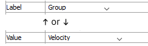
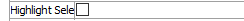
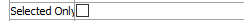

网格单元绘图项
说明
按标签或数值显示网格单元信息。该绘图项最前面的几个属性取决于第一个属性（contingent on the first attribute）（按…着色）。
属性
按…着色（Color-By） 标签/数值（Label/Value） 颜色列表/等值线（Color-List/Contour） 高亮选中项（Highlight Selected） 仅选中项（Selected Only） 空面（Null Faces） 隐藏空单元（Hide-Null） 映射（Map） 变形系数（Def-Fac） 多边形（Polygons） 透明度（Transparency） 图例（Legend）
按…着色

将“标签”或“等值线”设置为在绘图项上着色。
标签/值

指定在绘图项中显示哪个标签或值（由上一项设置决定）。两者的选项如下表所示。某些选项需要额外的、动态提供的属性才能完成选择；这些选项在表中有标注说明。
表 1：标签/值的选项 标签 数值ᴸ 数值（续） 密度 加速度ᶜ 乘数 额外变量ᵉ 条件ᵐ 孔隙压力ʷ 面的额外变量ᵉ 收敛 特性ᵖᵐ 面分组ˢ 密度ᵐ 饱和度 流体密度 位移ᶜ 应变增量ʸ 流体特性 动力时间步 应变率ʸ 分组ˢ 有效应力ᶻ 应力ᶻ 模型 附加ᶠ 应力-强度比ᵐ 乘数 流体 Biot 模量 目标力比 特性ᵖ 流体体积模量 温度 状态ᵗ 流体密度ᵐ 热学特性ᵖᵐ 热学特性ᵖ 流体特性ᵖᵐ 不平衡力ᶜ 类型 局部力比 速度ᶜ 均匀
图例说明： ᴸ*所有*数值都提供“对数”属性 ᶜ其后跟随一个“分量”属性 ᵉ其后跟随一个“附加”属性 ᶠ其后跟随一个“附加”属性和一个“类型”属性 ᵐ其后跟随一个“方法”属性 ᵖ其后跟随一个“特性”属性 ˢ其后跟随一个“槽位”属性 ᵗ其后跟随一个“状态依据”属性 ʷ其后跟随一个“来源”属性 ʸ其后跟随“分量”和“方法”属性 ᶻ其后跟随“分量”、“应力”和“方法”属性
颜色列表/等值线
此位置显示的属性是 颜色列表 或 等值线，取决于“按…着色”的选择。详情请参见标准的 颜色列表（color-list） 控件说明和标准的 等值线（contour） 控件说明。
高亮选中项

显示高亮的项。
高亮选中项：在绘图中指示（勾选）绘图项中选中的元素。
仅所选

设置显示哪些单元。
仅所选：指定仅渲染所选中的绘图项单元（勾选时）。
空面

显示空单元与非空单元之间的面边界。
空面：仅显示（勾选）另一侧为空单元的面。
隐藏空单元

不在绘图中显示空项。详情请参见标准的 隐藏空单元（hide-null） 控件说明。
映射

将该项映射到新的模型坐标。详情请参见标准的 映射（map） 控件说明。
变形系数

设置变形系数。详情请参见标准的 变形系数（def-fac） 控件说明。
多边形

设置项目面片的属性。详情请参见标准的 多边形（polygons） 控件说明。
透明度

设置绘图项的透明度。详情请参见标准的 透明度（transparency） 控件说明。
图例

设置绘图图例中该项目的标签。详情请参见标准的 图例（legend） 控件说明。
在 标题 下方，地下水位绘图项还在 图例 中为 映射、隐藏空单元、变形系数、颜色列表 和 数量 提供控件。
| 这些内容对您有帮助吗？… | FLAC3D © 2019, Itasca | 原文更新于 2020 年 10 月 8 日 |